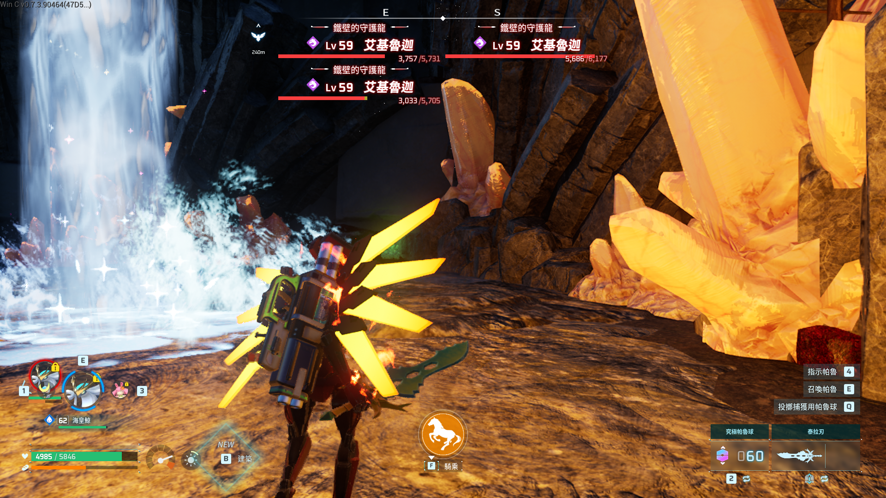

讀 Steam registry + libraryfolders.vdf，多函式庫自動跳轉，Win64 / WinGDK 自動判斷。
UE4SS、Paldar、dwmapi、main.lua 全部到位，不用手動找資料夾。
安裝前自動備份 Mods，卸載 100% 還原，連 dwmapi.dll 都拔乾淨。
H 切換、Z 放大、L 移位置、K 自訂 — 不用重啟遊戲即時生效。
開資料夾、看 log、一鍵啟動 Steam — 全部整合在一個視窗。
不用裝 Python、.NET、任何 runtime。Windows 內建 PowerShell 就跑得動。
點上面綠色按鈕，下載 MiniMap_GUI_Launcher.bat（只有 834 B）
Launcher 會自動解碼出完整 GUI，圖形視窗會跳出來
進遊戲按 H 切換小地圖，搞定！
| 元件 | 位置 | 用途 |
|---|---|---|
UE4SS.dll | Win64\ | UE4SS 引擎，Lua 腳本運行環境 |
dwmapi.dll | Win64\ | Okaetsu 實驗性 hook |
UE4SS-settings.ini | Win64\ | UE4SS 配置 |
MemberVariableLayout.ini | Win64\ | UProperty 反射配置 |
mods.txt | Win64\Mods\ | 啟用 mod 清單 |
main.lua | Win64\Mods\BPModLoaderMod\Scripts\ | Paldar 進入點腳本 |
Paldar.pak | Content\Paks\LogicMods\ | 小地圖本體資源 |
Paldar.modconfig.json | Content\Paks\LogicMods\ | 小地圖配置 |
MiniMap_GUI.bat（9.8 MB 那個），那個是完整 self-extracting 包，雙擊會跳出 console 自動解壓並啟動。📄 UE4SS.log 按鈕有沒有 log 訊息，或到我們 Discord 群問。Saved/SaveGames/，本工具只碰 Paks\ 和 Binaries\Win64\。卸載 = 100% 還原。main.lua 內容。Palworld-MiniMap-Uninstall.bat，會清掉所有 8 個元件，連備份資料夾都移除。完成後遊戲回到原始狀態。